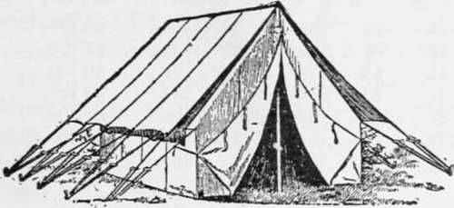

Chapter III. Tents For Fixed Camps
Description
This section is from the book "Camping And Woodcraft", by Horace Kephart. Also available from Amazon: Camping and Woodcraft.
Chapter III. Tents For Fixed Camps
When camp is made in a certain locality with no intention of moving it until the party is ready to go home, it usually is called a " permanent camp." This is a misuse of terms; for a camp of any kind is only a temporary biding place. " The camp and not the soil," says Gibbon, " is the native country of the genuine Tartar." When speaking of a camp fixed in one place for a considerable time, I shall call it a fixed camp or stationary camp. It differs from a shifting camp, so far as outfitting is concerned, in permitting the use of heavy and bulky equipment and more of the comforts of home.
Wall Tents
For fixed camps, situated where there are wagon roads or other adequate ways of transportation, the best cloth shelter is a wall tent, rectangular or square, of strong and rather heavy material.
Fig. 1. Wall Tent, with Fly.
It is a trade custom to list tents according to an arbitrary scale of ground dimensions, in even feet, although the cloth seldom works out exactly so; for ground dimensions are governed by the number of widths of cloth used and the number of inches to the width, allowing for seams. To slit the cloth lengthwise would destroy its strongest part, the selvage, besides being a waste of material. Moreover, cloth stretches or shrinks in handling.
In the following table are given the trade sizesj actual ground dimensions (these may vary), standard heights of wall and center, and weights of un-proofed tents (without flies, poles, or stakes) in sizes commonly used by campers. These sizes apply only to tents made of standard 29-inch duck. If 36-inch stuff, or some other width, is used, proportional allowances must be made.
Standard Wall Tents. 29-Lnch Duck
Trade sizes. | Actual width and length. | Height wall. | Height center |
9 x 9 ft. | gV3 x 9/3 ft. | 3 ft- | IV2 ft |
9x12 ft. | 9/3x11/2 ft. | 3 ft. | 7/ *1. |
12x12 ft. | ii/xii/ ft. | 1/2 ft. | 8 ft. |
12 x 14 ft. | 11/ x 14/ ft. | 3/ ft. | 8 ft. |
12x16 ft. | 111/2x16*4 ft. | 3/ ft. | 8 ft. |
14 x 14 ft. | 14 x 14 ft. | 4 ft. | 9 ft. |
14 x 16 ft. | 14 x i6J4 ft. | 4 ft. | 9 ft. |
Weight of poles and stakes varies a good deal, according to size and density of wood.
Flies of same length as tent, and same kind of duck, weigh about half as much as the tent itself.
As a rule, not more than four persons should occupy one tent. Two in a tent will get along better; for camp life is very intimate in any casb.
Weights of tents. | Poles and Stakes. | |||
Trade sizes | 8 oz. | 10 oz. | 12 oz. | |
9x9 ft. | 24 lbs. | 30 lbs. | 36 lbs. | ^8 lbs. |
9x12 ft. | 29/ lbs. | 35 lbs. | 42 lbs. | 30 lbs. |
12 X 12 ft. | 36 lbs. | 41/ lbs. | 50 lbs. | 35 lbs. |
12 X 14 ft. | 40 lbs. | 49 lbs. | 59 lbs. | 39 lbs. |
12 X 16 ft. | 44 ^s. | SVA lbs. | 63 lbs. | 40 lbs. |
14 x 14 ft. | 44/ lbs. | 58 lbs. | 68 lbs. | 41 lbs. |
14 x 16 ft. | 51/ lbs. | 63 lbs. | 76 lbs. | 45 lbs. |
A group of small tents around a common campfire is quite as sociable as if the party were all bunked together — except when sociability is not wantedv as when some wish to sleep and others want to play cards. Even a camper does not care to reduce his individuality to a least common multiple.
Two small tents need not be made of so heavy material as a large one of cubic capacity equal to both of them. They are easier to erect and manage. They are more adaptable to various camp sites. Their short poles are handier to transport (for that matter, jointed ones may be bought, up to a limit of twelve feet total length). And small tents are stancher in a gale than big ones.
Roominess is not to be estimated by ground dimensions alone. It depends much upon height of center and walls. If a tent is to be used right on the ground, not elevated over a floor with baseboards, it should be made higher in center and walls than the standard proportions given in the table. This is not expensive: the charge is only five per cent, of the cost of regular tent for each six inches of added height.
To my notion the best all-round size of wall tent for two people, if weight and bulk and cost are of any consequence, is the so-called 9x9 or a 9x 12, huilt with 3^4-foot walls, instead of 3-foot, and 8-foot center, instead of 7jA-ioot. For four persons a 12x14 is commonly used; but a 14x14 with 4-foot walls and 9-foot center has double the head-room of the standard 12x14, and 2^/2 feet more space between cots, if these are set lengthwise of the tent, two on a side.
Before selecting a tent, consider the number of people to occupy it, and their dunnage, and the furniture. Then draw diagrams of floor and end elevation, of various sizes, fitting in the cots, etc., according to scale; so you can get just what you want — no more, no less.
Tent Materials
The conventional tent is made of plain cotton duck. A single roof of such material will shed rain, if the stuff is closely woven, but only so long as it is stretched at a proper angle, rather taut, and nothing touches it from the inside. If so much as a finger-tip should be rubbed against the under side of the roof, a leak would spring there, due to capillary action. It is of little use to draw the finger from the drip spot down to the tent wall, for, although this runs the water off for a time, fresh dripping will start on each side of the line.
Nor is it possible to avoid slackness in a roof of plain canvas during a wet spell of weather. Cloth that is not water-proofed will shrink a great deal as soon as it gets wet; hence the guy ropes must be let out, and the roof allowed to sag, before the rain comes; otherwise the shrinkage of the canvas will loosen your tent stakes, or even pull them all up together, when down goes your house about your ears!
For these reasons, a tent should either be waterproofed, or should have a supplementary roof called a fly. These matters will be considered later.
Cotton duck comes in three general grades, known as single filling, double filling, and army duck.
Single filling duck is made of coarse yarn, loosely woven, and of an inferior grade of cotton. It is suitable only for cheap tents that are not intended for continuous use, and generally is a bad " bargain " even then. It is weaker than the same weight of the other grades and is poor stuff to shed water.
Double filling duck is of closer texture, better fiber, and is equal to all but the hardest service. For average summer Camping it is good enough.
Army duck is the best grade made, of selected cotton free from sizing, both warp and filling doubled and twisted, closely woven, and free from imperfections — if it comes up to army standard. It will outwear any other tent material of the same Weight, except flax (which I have not seen used in this country), and sheds water much better than cheaper grades.
Continue to: